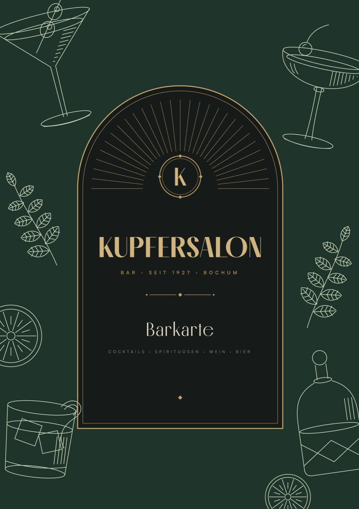
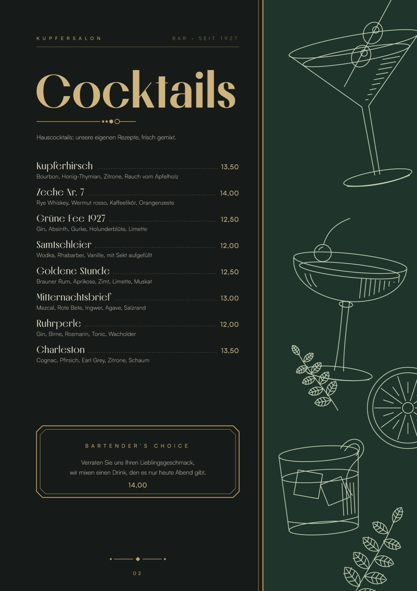
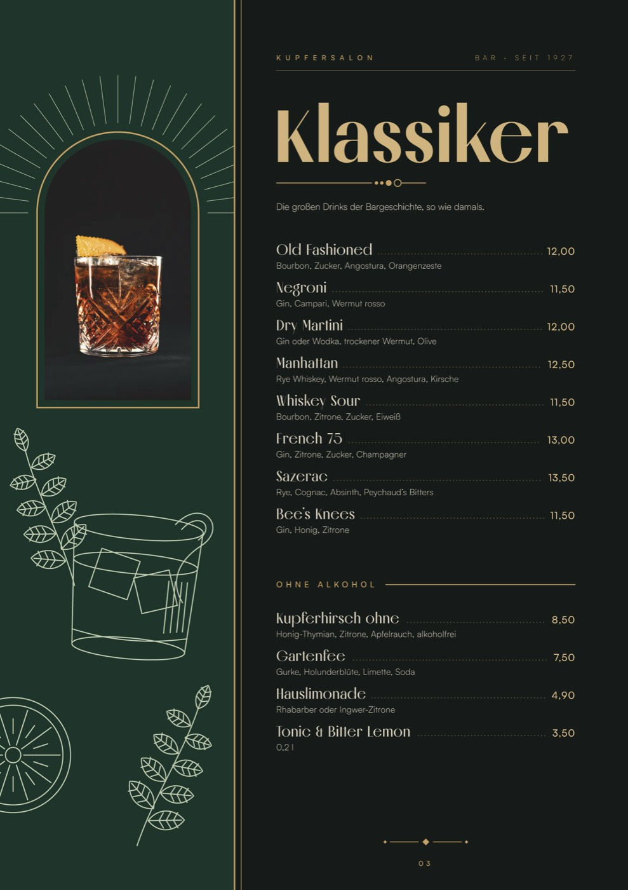
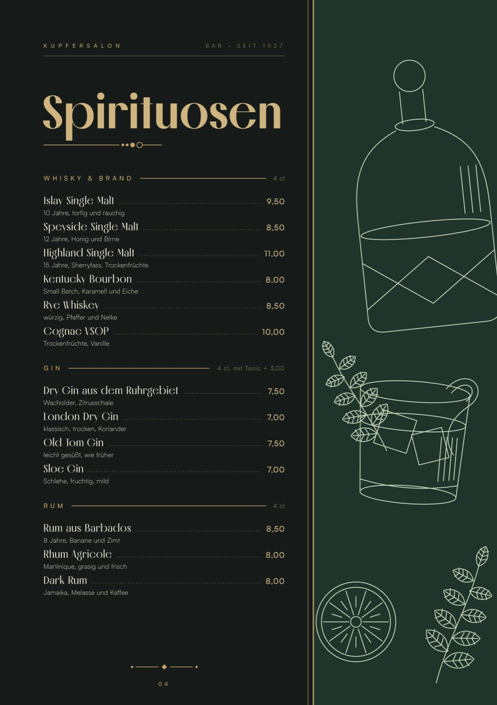
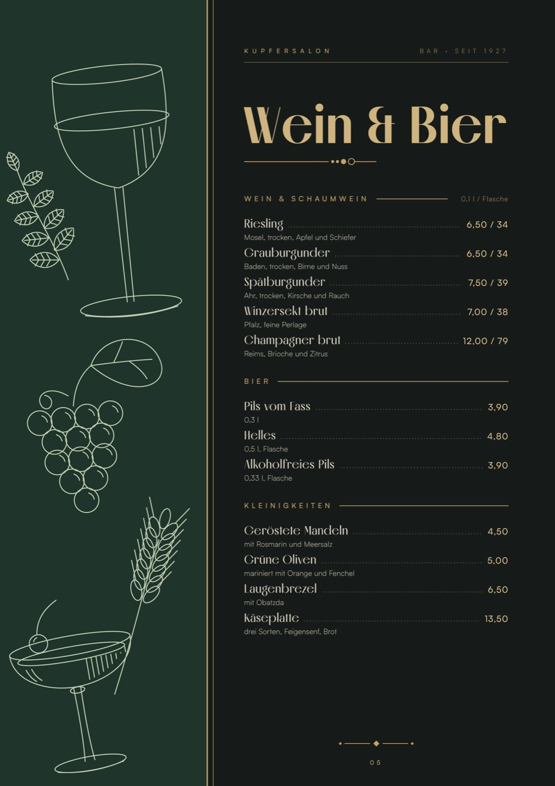
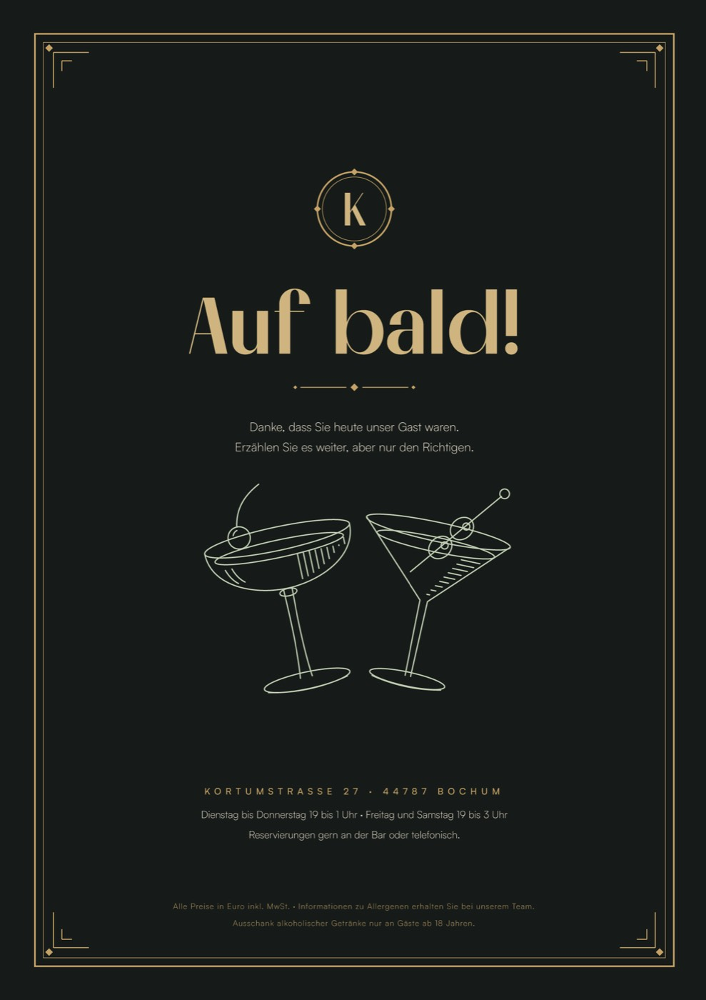

Kupfersalon
- Client
- Kupfersalon Cocktail Bar (concept)
- Year
- 2026
- Scope
- Bar menu, Illustration
A bar menu for a cocktail bar in Bochum that lives in the 1920s. I wanted it to feel like an old engraving under a brass lamp: bottle green, champagne gold, Art Deco arches and fine line drawings of glasses, herbs and citrus. Six pages from cover to last call.



From engraving to bar menu
One evening mood, translated into colours, type, drawings and six pages.
Concept
A speakeasy feeling without kitsch. Dark green and gold come from velvet and brass, the arch and sunburst from Art Deco. Every page has a green panel with drawings, switching sides like a real printed menu.
- Headlines
- Melodrama
- Text & prices
- Satoshi
Illustration
I drew the glasses, a decanter, citrus and herbs as thin outlines with a little hatching, like old copper engravings. They are vector shapes, so they work for print, foil and signage.


Details
Dotted leaders to the prices, a Bartender’s Choice box and a monogram K on the cover and back. Format A4, six pages, ready for gold foil on the headlines.
